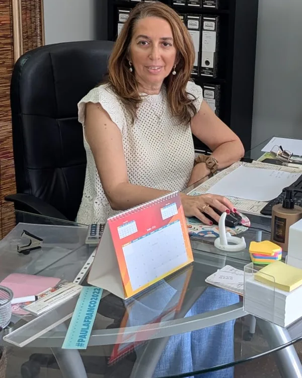
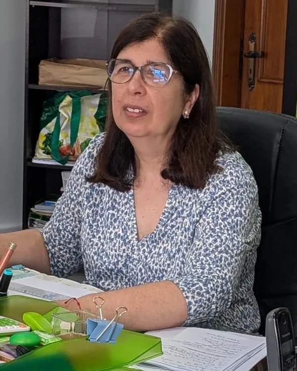

Rigor contabilístico e fiscal
Cada processo é tratado com responsabilidade técnica, atenção documental e respeito pelas obrigações legais. Não há espaço para improvisos ou negligências.
05 · Sobre nós
A Clave de Números combina rigor técnico, conhecimento da realidade das empresas, e uma relação de proximidade com os seus clientes, para uma melhor compreensão e decisão.
A Clave de Números nasceu em 2011 com a elaboração de projetos de investimento para empresas. A contabilidade surgiu naturalmente, como resposta às necessidades dos clientes. Desde então, o serviço evoluiu para acompanhamento fiscal, consultoria de gestão, processamento salarial e outras áreas, sempre com foco na proximidade, na clareza e no rigor.
O crescimento tem sido pelo passa-a-palavra, o que reflete a satisfação dos clientes com o trabalho realizado.
O método de trabalho da Clave de Números assenta em quatro pilares: compreender a atividade do cliente; organizar documentos, prazos e processos; acompanhar o trabalho contabilístico com regularidade; clarificar obrigações e resultados para que o cliente possa decidir com segurança.
Este método surgiu naturalmente das conversas com os clientes e da observação de quais eram os pontos críticos na relação entre contabilista e empresa.
Estes três princípios orientam todas as decisões e o trabalho diário da Clave de Números.
Cada processo é tratado com responsabilidade técnica, atenção documental e respeito pelas obrigações legais. Não há espaço para improvisos ou negligências.
Conhecemos a realidade de cada cliente e mantemos uma comunicação direta, acessível e ajustada às suas necessidades. Não somos um departamento distante.
Explicamos procedimentos, obrigações e resultados com palavras simples. O cliente compreende o que está a acontecer e por quê.
A Clave de Números é uma estrutura pequena, composta por profissionais com experiência em contabilidade, fiscalidade e gestão. Este tamanho permite uma comunicação ágil e uma flexibilidade que as grandes estruturas não conseguem oferecer.
Cada cliente conhece quem trabalha na sua conta. Não há rotatividade de pessoas ou mudanças constantes de interlocutor.
A Clave de Números é hoje uma equipa de quatro profissionais. Cada pessoa acompanha áreas concretas do trabalho, mas a organização interna permite distribuir responsabilidades sem fragmentar a relação com o cliente.

Dirige a Clave de Números e acompanha diretamente os clientes, articulando o conhecimento técnico com a leitura global de cada atividade.
Licenciada em Gestão pela Universidade de Évora, Isabel Monteiro iniciou o seu percurso profissional na elaboração de projetos de investimento para empresas, área que esteve na origem da atividade que viria a dar forma à Clave de Números.
Como fundadora e Contabilista Certificada, dirige o trabalho da empresa e mantém uma visão transversal sobre os clientes, os respetivos processos e as decisões que exigem maior enquadramento contabilístico, fiscal ou de gestão.
O seu trabalho combina experiência, autoridade técnica, disponibilidade e conhecimento direto de cada atividade, ajudando os clientes a compreender melhor as suas obrigações e a tomar decisões com mais segurança.
Coordena processos contabilísticos e fiscais, acompanha empresas clientes e assegura organização, prazos e articulação interna.
A trabalhar na área desde 2020, Gisela Oliveira assegura a coordenação operacional dos processos contabilísticos e fiscais, com especial atenção à organização, ao controlo de prazos e ao acompanhamento regular das empresas clientes.
Mantém contacto direto com os clientes, assegurando um acompanhamento atento, organizado e rigoroso.
Articulada, organizada e fiável, contribui para que cada processo avance com clareza, método e rigor.

Acompanha ENI e trabalhadores independentes, com especial atenção à organização documental, IRS e obrigações fiscais.
Com cerca de quinze anos de experiência na área da contabilidade, Ana Fernandes acompanha sobretudo Empresários em Nome Individual e trabalhadores independentes.
O seu trabalho passa pela organização dos processos, pela preparação e acompanhamento do IRS e pela gestão da documentação necessária ao cumprimento das obrigações fiscais.
Com uma presença próxima e atenta, contribui para que cada cliente tenha os seus elementos organizados, os prazos controlados e uma relação mais clara com a sua atividade.
Assegura a gestão documental, as tarefas administrativas e a organização das comunicações do dia a dia.
Tatiana dos Santos assegura a gestão documental, o acompanhamento das tarefas administrativas e a organização das comunicações necessárias ao funcionamento diário da Clave de Números.
O seu trabalho ajuda a manter os processos organizados, a informação acessível e a articulação entre equipa e clientes mais fluida.
Com método, atenção ao detalhe e sentido prático, contribui para que o acompanhamento administrativo decorra com clareza e continuidade.
A equipa trabalha sobre o mesmo histórico documental e articula as diferentes áreas sempre que uma situação exige mais do que uma intervenção.
Ver como acompanhamos empresas, independentes e negócios online →
Quando trabalha com a Clave de Números, sabe o que esperar: comunicação clara, processos bem definidos, e uma equipa que conhece a sua empresa.
Aqui estão alguns testemunhos reais de clientes que trabalham com a Clave de Números.
"Excelente trabalho realizado pela Clave de Números! Demonstram um elevado profissionalismo, sendo sempre extremamente diligentes, disponíveis e acessíveis. Recomendo vivamente."
"Antes de constituir a minha empresa, trabalhava como independente e tinha muitas dúvidas sobre todo o processo. Felizmente, pude contar com o acompanhamento da Joana que me guiou em cada passo."
"Constituí a minha empresa e, como é natural, surgiram muitas dúvidas relacionadas com faturação, impostos e outros procedimentos. Desde o primeiro momento, a Clave de Números esclareceu todas as minhas questões."
"Antes de tomar a decisão sobre a melhor forma de exercer a minha atividade, tinha muitas dúvidas: não sabia se deveria manter-me como ENI, passar para empresa, ou outra modalidade. A orientação foi fundamental."
"O escritório Clave de Números tem sido um grande parceiro da minha empresa. As profissionais são muito competentes, atenciosas e dignas de confiança. Recomendo."
"Só tenho elogios para a Clave de Números! Desde a abertura da nossa empresa, acompanharam-nos em todo o processo e foram sempre muito prestáveis e transparentes."
1 de 6
Estamos na Rua Cidade de Ponta Delgada, Loja 136, no Montijo.
O nosso espaço foi pensado para ser acessível, com abundante estacionamento e uma localização central no concelho.

Estamos na Rua Cidade de Ponta Delgada, Loja 136, no Montijo, e acompanhamos clientes em todo o país. Fale connosco para conhecer os nossos serviços.
Fale connosco